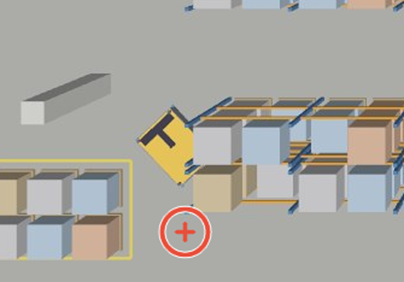
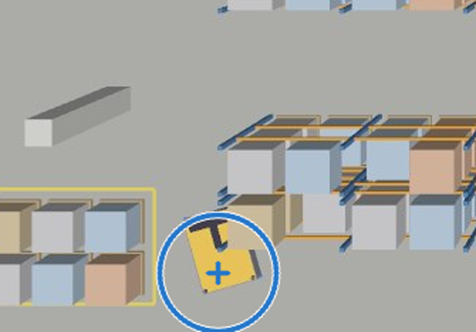
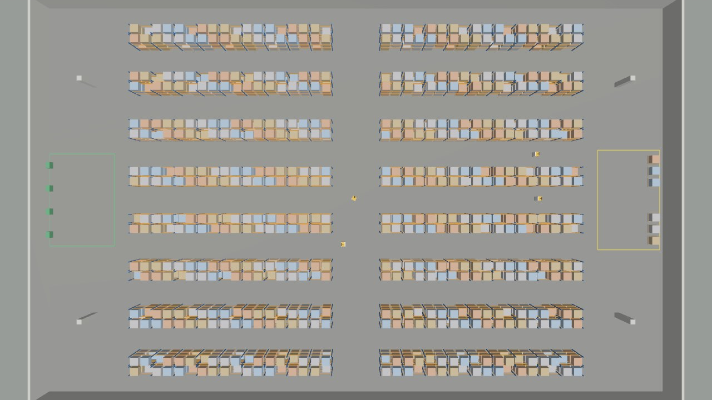
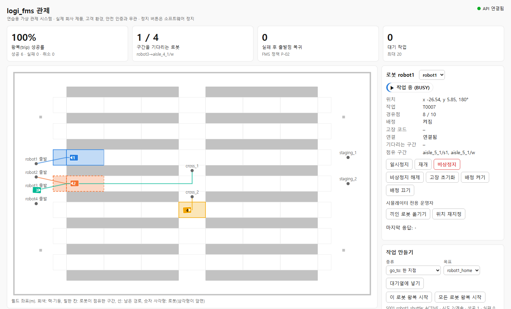
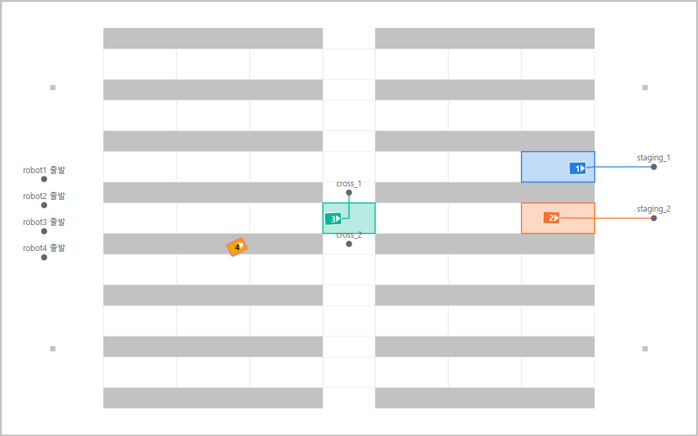
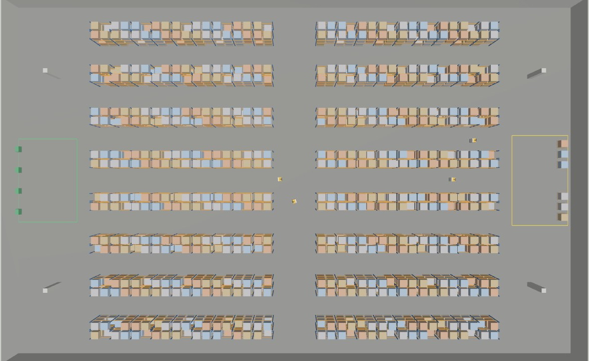
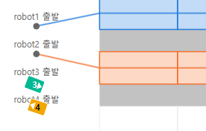
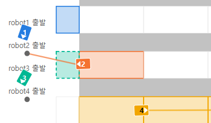
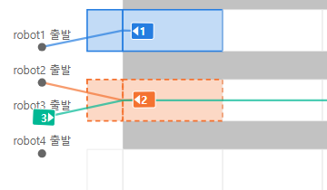

ROBOT QA PORTFOLIO
로봇 QA 사례 모음
로봇 분야에서 5년 5개월 일했습니다. 유진로봇에서 1년 8개월 동안 AMR 소프트웨어 QA를, 로보티즈에서 3년 9개월 동안 액추에이터 조립·QC를 맡았습니다. 실제 로봇으로 정기 릴리즈 QA를 하며 여러 로봇이 함께 쓰는 설비의 연동 결함을 직접 찾아 보고했고, 손으로 재현하기 어려운 간헐적 문제는 자동화로 관찰 기회를 늘렸습니다. 지금은 ROS 2·Gazebo로 다중 로봇 시뮬레이션 QA를 하고 있습니다.
핵심 역량
회사 사례는 사내 자료(로그 원문, 관제 화면, 내부 문서)를 쓰지 않고 제 기억과 기록으로 다시 정리했으며, 그림은 이해를 돕기 위해 새로 그렸습니다. 개인 프로젝트의 코드·테스트는 AI 도구(Claude Code, Codex)가 작성했고, 사례마다 제가 맡은 부분을 따로 적었습니다.
01. 다중 로봇 설비 연동 E2E 시나리오 테스트 실무 · 유진로봇 · 2023.01–2024.08
여러 로봇과 엘리베이터·자동문이 함께 움직이는 E2E 시나리오를 설계해 연동 결함을 직접 찾아 보고했고, 수정된 기능을 같은 시나리오로 확인·회귀 테스트했습니다.
02. 결함 재현과 전달 실무 · 유진로봇
결함의 재현 조건·빈도·로그·영상을 정리해 Jira·Confluence로 개발팀에 전달하고, 수정 뒤 확인·회귀 테스트를 했습니다. 로봇이 실제로 한 일과 관제가 보여 준 상태를 나란히 보여 주려고 로봇 영상과 관제 화면 영상을 따로 찍어 전달했습니다.
결함 보고 형식 예시 (실제 사내 결함이 아니라 형식을 보여 주려고 만든 가상의 예입니다)
Title: Robot stays stopped after the obstacle in front of it is removed Steps to reproduce: 1. Start a mission on a straight path. 2. Place a box on the path; the robot stops in front of it. 3. Remove the box and wait 10 seconds. Expected: The robot resumes the mission. Actual: The robot stays stopped until the mission is restarted. Reproducibility: 5/5 under the same conditions Environment: robot SW version, fleet-manager version, map name Attachments: robot log, robot video, fleet-manager screen recording
03. 반복 시험 자동화 실무 · 유진로봇
손으로 재현하기 어려운 간헐적 문제는 Python·Selenium으로 반복 시험을 자동화해 발생 빈도와 증거를 확보했습니다. 측정 시험은 센서 기반 측정 장치를 직접 만들어 자동화했습니다.
04. 액추에이터 품질 검사와 측정 환경 개선 실무 · 로보티즈 · 2019.03–2022.11
- 로봇 액추에이터 조립 전후 품질 검사와 성능·소음·신뢰성(에이징·강제 부하) 시험을 했습니다.
- 측정값이 주변 소리 때문에 자주 튀자, 소음 챔버를 직접 만들어 측정 환경을 바꾸고 믿을 만한 데이터를 얻었습니다.
- 불량품의 증상과 내부 상태로 원인 부위를 판단하고 수리했습니다.
05. 창고 시뮬레이션에서 회귀 원인 좁히기 개인 프로젝트 · 2026.11
결정·관찰: 본인 · 구현·실행: Claude Code · 환경: ROS 2 Jazzy, Gazebo, Nav2(WSL2), 랙 4줄을 둔 40 × 25 m 창고, 가상 물류 AMR의 지그재그 작업
주행 규칙을 여러 개 더한 뒤 같은 작업의 성공률이 크게 떨어졌습니다. 원인을 가르기 위해, AI가 낸 선택지 중 기준선으로 돌아가 한 가지씩 다시 적용하는 방식을 골랐습니다(단계 순서는 AI 제안).
| 설정 | 작업 성공 | 확인한 것 |
|---|---|---|
| 설정 1 (처음) | 2/2 | 기준 |
| 설정 2~4 (후진 제한, 통과점, 감속 구역 등을 차례로 더함) | 0/2 → 0/1 → 작업 시작 못 함 | 규칙을 여러 개 바꾼 뒤 성공률이 떨어진 회귀 |
| 기준선 다시 측정 | 2/2 | 처음 설정은 여전히 성공 → 그 뒤에 바꾼 설정 쪽에 원인 |
| 하나씩 다시 적용: + 통과점 | 작업 2/2, 복귀 0/1 | 모서리 경유점을 0.99 m로 스쳐 '지남' 반경(0.7 m)을 놓침 |
| + 통과점 (반경 1.5 m로 조정) | 작업 2/3, 복귀 1/1 | 모서리 문제 재발 없음. 남은 실패 1회는 통로를 건너뛰는 다른 이상 동작 |


위에서 본 시뮬레이터 화면 · 노란 판의 T자가 로봇 앞쪽 · 원·+ 표시는 덧그림, 원 크기는 대략. 반경을 키우는 쪽은 제 실무 경험을 바탕으로 골랐고, 값 1.5 m는 AI가 제안했습니다. 영상에서 튀어 보인 약 60° 꺾임은 프레임이 약 2.5초 빠진 녹화 문제로 가려냈고(대조는 AI 도구), 같은 장면의 통로 건너뛰기와 제자리 회전은 실제 주행 이상으로 따로 기록했습니다.
06. 로봇 4대 관제 실연동 — 이슈를 기록하고 고쳐 다시 시험 개인 프로젝트 · 2026.11
결정: 본인(규칙·시나리오·이슈 처리 방향) · 관제 프로그램·시험 코드·실행·분석: Claude Code
- 환경: 80 × 50 m 창고에서 카트형 로봇 4대(0.8 m/s)가 쉬지 않고 왕복합니다. 로봇은 공개된 상용 사양을 참고한 근사 모델이며 일부는 가정입니다.
- 통로 관리: 통로를 구간 42개와 교차점 7개로 나눠, 로봇이 구간마다 요청 → 허가 → 통과 → 해제합니다. 연습용 가상 관제 시스템입니다.
- 제가 정한 것: 1대로 시작해 늘리기, 창고 배치, 점유 규칙, 통로 반쪽 안에서는 같은 방향 로봇만 다니기, 이슈가 나면 멈추고 기록한 뒤 고쳐서 다시 시험하기


첫 실연동: 로봇 3대가 자기 위치를 잃음


본인 판단: 이슈로 보고 운행을 멈춘 뒤, 기록하고 고쳐서 다시 시험하기로 정했습니다. AI 분석·수정: 위치 추정 설정 조정 → 1대 비교 최대 위치 오차 1.71 m → 0.27 m, 이후 4대 운행에서 위치 상실 0건.
출발점에서 방향을 못 맞추고 머묾

- 3차 · 첫 수정 뒤: 한 로봇에서 2건. 1대 비교로는 고쳐졌지만(3/6 → 6/6) 4대에서 다시 남
- 4차 · 두 번째 수정 뒤: 세 로봇에서 3건 → 왕복 75%. 새 수정이 다른 빈틈을 만든 것으로 AI가 추정
- 5차 · 회전 전용 제어기: 시간 초과 0, 방향 전환 4차 110~500초 → 5차 16~17초 (30분 운행 1회, 표본 2~3회)
1대 비교와 4대 결과가 두 번 엇갈려 4대 실연동 결과로 확인했습니다. 수정 방법은 AI가 낸 선택지 중 추천안을 제가 골랐습니다.
새 관제 결함: 지나간 입구 구역을 다시 쥠


왜 놓쳤나: 가짜 로봇 시험은 도착과 동시에 작업이 끝나 '도착 뒤 방향 맞추기' 시간이 없었고, 실연동에서 드러났습니다. AI 수정: 회귀 시험 2개(수정을 되돌리면 2개 실패) → 5차(30분 1회)에서 다시 쥔 일 0회(4차 9회). 안전 결함이 아니라 오래 막는 결함입니다.
운행별 왕복 성공률
| 운행 | 왕복 성공 | 드러난 것 |
|---|---|---|
| 1차 · 첫 실연동 | 6회 중 3회 | 3대가 위치를 잃어 운행 도중 멈춤 |
| 2차 · 위치 추정 수정 뒤 | 19회 중 16회 | 머묾·교차점 중단 이슈가 새로 드러남 |
| 3차 · 주행 이슈 2개 수정 | 26회 중 24회 | 관제 결함(구간을 일찍 풂) 발견 |
| 4차 · 입구 구역·관제 수정·머묾 후속 | 12회 중 9회 | 실패 3회 모두 머묾 · 새 관제 결함 발견 |
| 5차 · 회전 전용 제어기·재점유 수정 | 18회 중 18회 | 30분 운행 1회 |
각 1회 운행. 2차 실패 1건은 시뮬레이터를 먼저 끈 운영 실수(빼면 89%). 운행을 멈출 때 진행 중이던 왕복은 취소로 집계 밖. 이슈를 피하려고 설정을 바꾸지 않고, 드러난 이슈를 기록 → 수정 → 재시험했습니다.
07. AMR 미션·도킹 QA 테스트 랩 개인 프로젝트 · 2026.10
주제 선정: 본인 · 구현: Codex
- 오류 주입으로 드러남: 20% 경계 결함을 일부러 심어도 아무 테스트도 잡지 못함 → 테스트케이스 자체의 결함
- 수정 뒤: 사전 조건에 배터리 20%를 명시하고 다시 돌림 → 심은 결함 3개를 모두 잡음
테스트가 통과해도 제대로 시험하는지는 따로 확인해야 하고, AI가 만든 테스트라면 더 그렇습니다. 실행 결과 보기 ↗